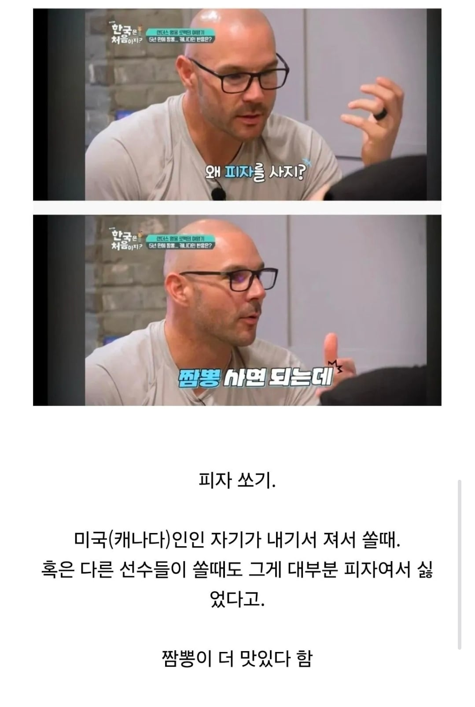

오
ㅋㅋㅋ로맥을 여기서보ㅔ
꼰맥 한국 그립나봐 ㅋㅋ
넥센 용병 피자 먹는 짤
그립읍니다.
저땐 가난해도 야구는 잘했는데
행복해보이네
대 맥
황 맥
생 맥
역시 꼰맥형이야
짬뽕은 매워서 호불호가 있지 않나?
맛있게 하는 집은 외국인들도 눈돌아감.
특히 흑인들 짬뽕 겁나잘먹음 후허후허 하면서 온몸으로 느껴
자극적인건 다들 좋아하나보네
서양애들은 한국피자가 많이 달다고하더라
누구여 꼰맥이여?
한국식 피자 맛없지
피자가 간편하게 손으로 집어서 먹기 편해서 + 티슈로 손가락만 닦으면 끝이라 운동선수들이 선호하지
아니 그냥 저인간은 짬뽕좋아하는거임
빅맥
황맥
갓맥
왜 감자탕 사라고 하지.